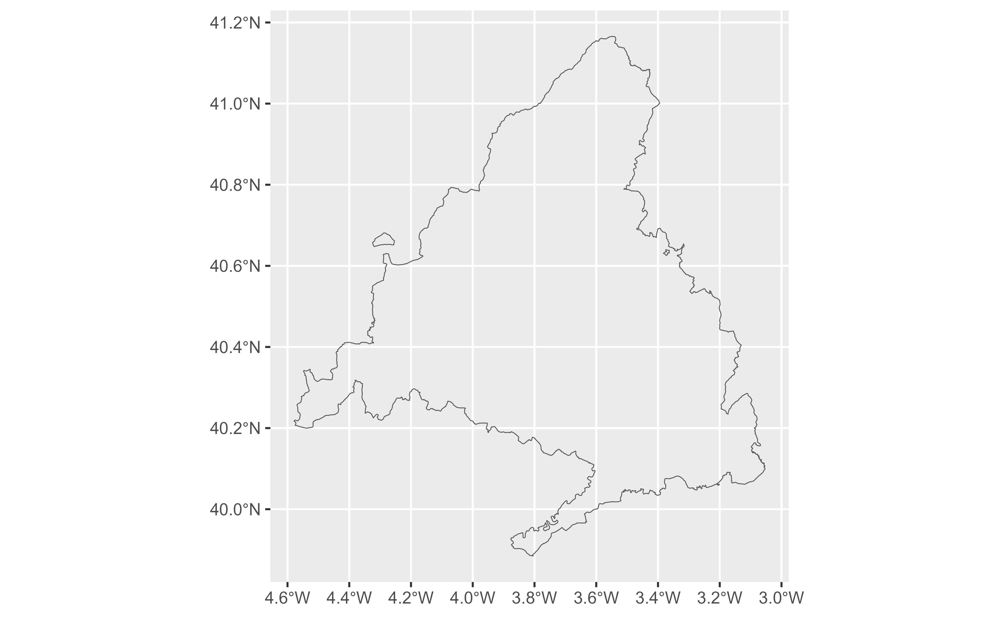

This function allows you to geocode addresses and returns the corresponding
spatial object. This function returns the spatial object associated with the
query using sf, see geo_lite() for retrieving the data in
tibble format.
This function correspond to the free-form query search described in the API endpoint.
Usage
geo_lite_sf(
address,
limit = 1,
return_addresses = TRUE,
full_results = FALSE,
verbose = FALSE,
progressbar = TRUE,
nominatim_server = "https://nominatim.openstreetmap.org/",
custom_query = list(),
points_only = TRUE
)Arguments
- address
characterwith single line address, e.g. ("1600 Pennsylvania Ave NW, Washington") or a vector of addresses (c("Madrid", "Barcelona")).- limit
Maximum number of results to return per input address. Note that each query returns a maximum of 50 results.
- return_addresses
Return input addresses with results if
TRUE.- full_results
Returns all available data from the API service. If
FALSE(default) only address columns are returned. See alsoreturn_addresses.- verbose
If
TRUEthen detailed logs are output to the console.- progressbar
Logical. If
TRUEdisplays a progress bar to indicate the progress of the function.- nominatim_server
The URL of the Nominatim server to use. Defaults to
"https://nominatim.openstreetmap.org/".- custom_query
A named list with API-specific parameters to be used (i.e.
list(countrycodes = "US")). See Details.- points_only
Logical
TRUE/FALSE. Whether to return only spatial points (TRUE, which is the default) or potentially other shapes as provided by the Nominatim API (FALSE). See About Geometry Types.
Value
A sf object with the results.
Details
See https://nominatim.org/release-docs/latest/api/Search/ for additional
parameters to be passed to custom_query.
About Geometry Types
The parameter points_only specifies whether the function results will be
points (all Nominatim results are guaranteed to have at least point
geometry) or possibly other spatial objects.
Note that the type of geometry returned in case of points_only = FALSE
will depend on the object being geocoded:
Administrative areas, major buildings and the like will be returned as polygons.
Rivers, roads and their like as lines.
Amenities may be points even in case of a
points_only = FALSEcall.
The function is vectorized, allowing for multiple addresses to be geocoded;
in case of points_only = FALSE multiple geometry types may be returned.
See also
Geocoding:
geo_address_lookup(),
geo_address_lookup_sf(),
geo_amenity(),
geo_amenity_sf(),
geo_lite(),
geo_lite_struct(),
geo_lite_struct_sf()
Get sf objects:
bbox_to_poly(),
geo_address_lookup_sf(),
geo_amenity_sf(),
geo_lite_struct_sf(),
reverse_geo_lite_sf()
Examples
# \donttest{
# Map - Points
library(ggplot2)
string <- "Statue of Liberty, NY, USA"
sol <- geo_lite_sf(string)
if (any(!sf::st_is_empty(sol))) {
ggplot(sol) +
geom_sf()
}
sol_poly <- geo_lite_sf(string, points_only = FALSE)
if (any(!sf::st_is_empty(sol_poly))) {
ggplot(sol_poly) +
geom_sf() +
geom_sf(data = sol, color = "red")
}
# Several results
madrid <- geo_lite_sf("Comunidad de Madrid, Spain",
limit = 2,
points_only = FALSE, full_results = TRUE
)
if (any(!sf::st_is_empty(madrid))) {
ggplot(madrid) +
geom_sf(fill = NA)
}

# }